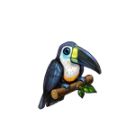
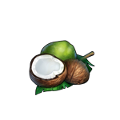
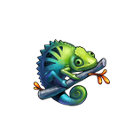
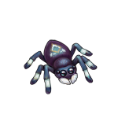

Получено: файл; исходный URL. Иллюстрация в отдельной статье ViveR_9 «Тропическая коллекция»; исходный файл без перекодирования. Авторство отдельно не установлено. Страница: источник.

Тропическая коллекция
Браузерная социальная версия; историческая статья; дата редакции неизвестна- Тип
- Коллекции
- Версия и дата
- Браузерная социальная версия; историческая статья; дата редакции неизвестна
Элементы коллекции












Данные по источнику · Браузерная социальная версия · историческая статья; дата редакции неизвестна
Предварительно: один материал, требуется сверка. Требуется сверка.
- Состав (источник Zombie-island)
- Тукан; Тропическая лилия; Кокос; Хамелеон; Тарантул.
- Награда (источник Zombie-island)
- 300 Опыт; 1 Секвойя.
- Тропическую коллекцию можно найти в ценностях и сокровищах
- Шкатулка; Череп; Бутылка; Зимний сюрприз; Северный бриллиант; Северный изумруд; Подарок фиолетовый с черепом; Новогодняя елка; Вишневый торт.
- Тропическую коллекцию можно привезти с пиратских островов
- Пиратский сундук; Остров Сокровищ.
Данные по источнику · браузерная версия; платформа не указана · дата редакции не установлена
Предварительно: Содержимое списка: изображения и колонки могут терять смысл при извлечении текста; отдельная страница и дата не проверены. Подписи alt иногда ошибочны.. Требуется сверка.
- Текст карточки из каталога
- 300 Опыта и Секвойя Тукан Тропическая лилия Кокос Хамелеон Тарантул Где хорошо копается Тропическая коллекция На Пиратских островах
Данные по источнику · Браузерная версия ВКонтакте; редакция не установлена · 05.10.2018 — дата публикации; дата последующей редакции неизвестна
Предварительно: Фанатская статья: вероятность находки не указана; независимость от других справочников не установлена.. Требуется сверка.
- Состав
- Тукан; Тропическая лилия; Кокос; Хамелеон; Тарантул.
- Обмен
- 1 Секвойя и 300 опыта.
- Получение
- Рулетка Пруда; среди ценностей Подарок, Драгоценный цветок, Золотой росток, Бочонок, Открытый ларец, Бутылка, Шкатулка, Северный бриллиант, Северный изумруд, Кулон и Череп.
- Палочками
- Октавий и Пончик-победитель.
- Участие в заданиях
- Например «Сквозь заросли», «Помощь Сильвера»; количество не указано.
Связанные сущности
нет проверенных связей — требуется сверка.